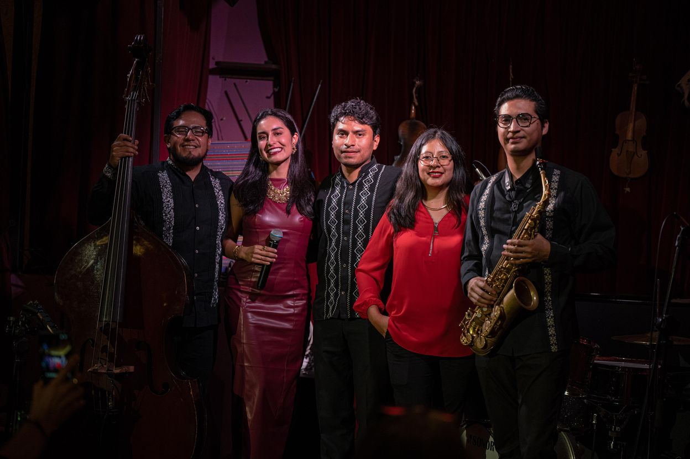
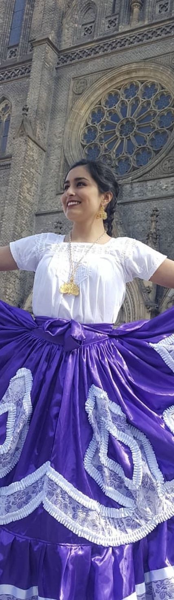
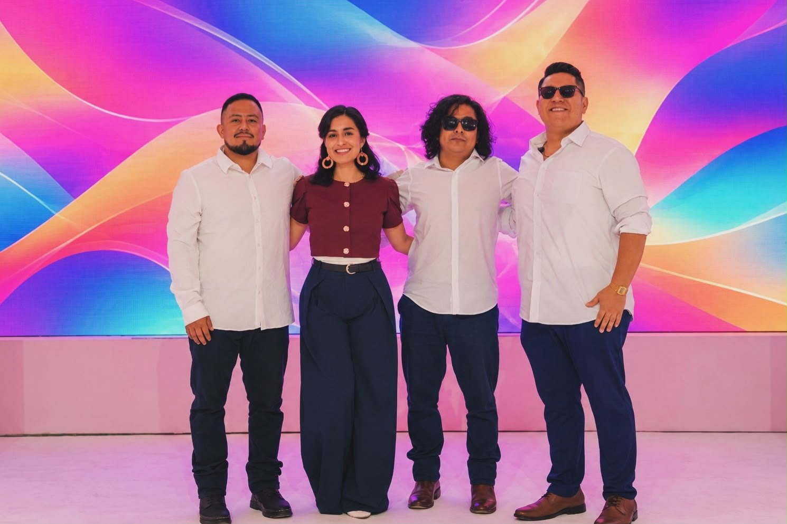
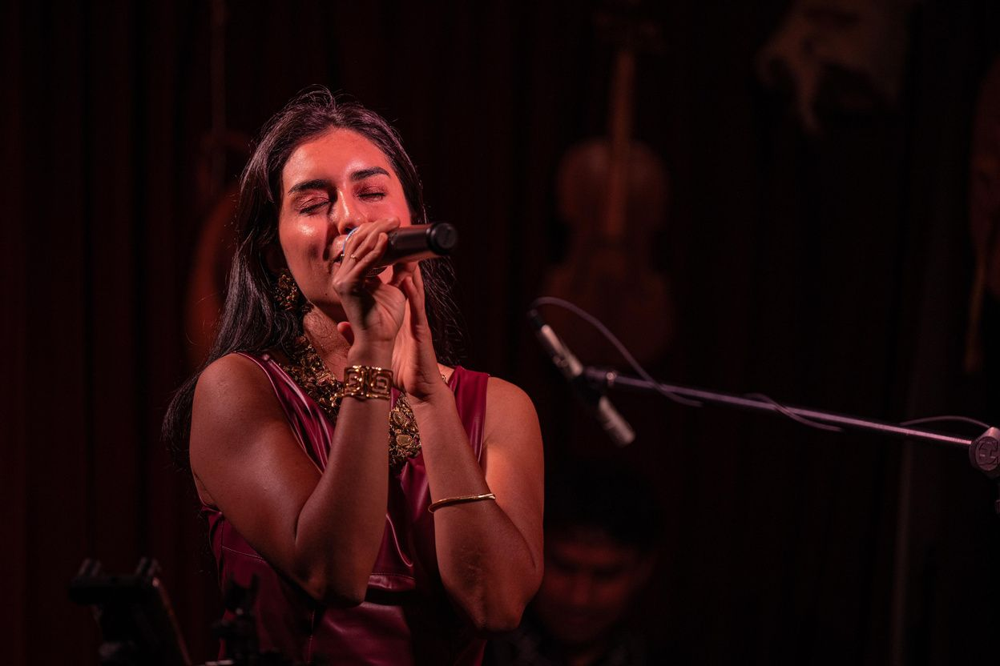
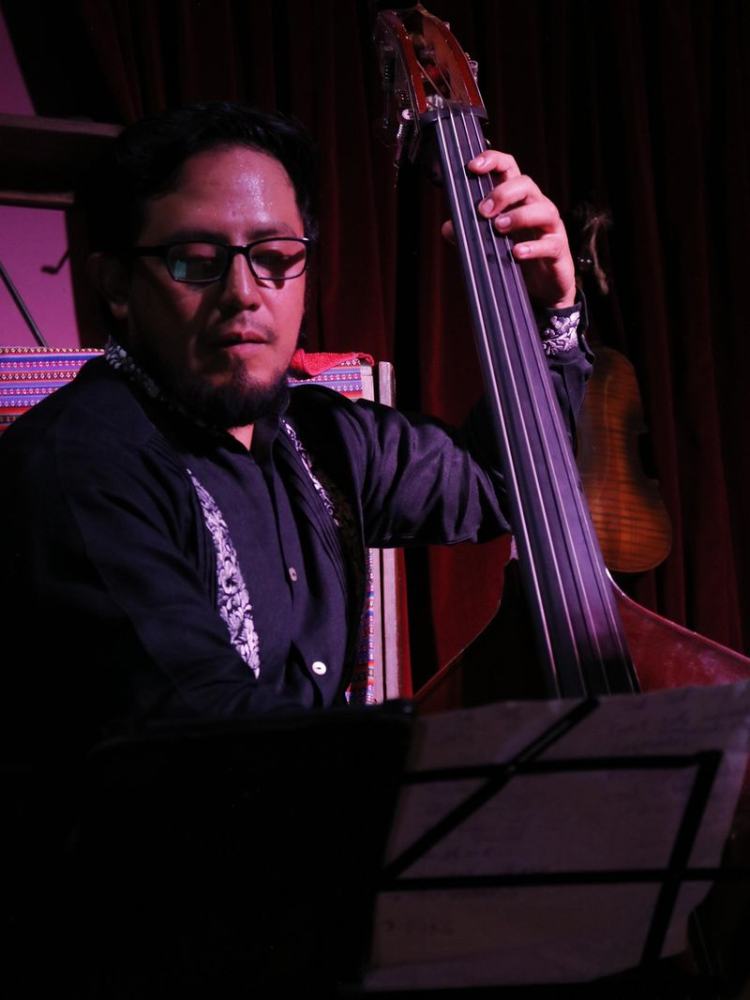

Naomi Fernanda Villegas Luna, conocida artísticamente como Naomi Luna, es una cantante oaxaqueña de raíces mixtecas. Su voz, de tesitura mixta, encuentra su casa en el bolero y se enriquece con matices de jazz, soul y la técnica del bel canto.
Se formó desde niña entre Oaxaca y la Ciudad de México y continuó su preparación en Lyon, Francia. Durante sus años en Praga cantó en los actos oficiales de la Embajada de México, del Día de la Independencia a recepciones diplomáticas, y llevó la música oaxaqueña a festivales y organizaciones culturales. De regreso en Oaxaca fundó el ensamble Corazón Antequera y hoy canta en bodas, cenas privadas, hoteles y eventos culturales.
La música como territorio de memoria, identidad y comunidad.
Voz
Tesitura mixta
Estilos
Bolero, jazz, soul, bel canto
Raíces
Mixtecas · Oaxaca, México
Canta en
Español, inglés, francés e italiano
Base
Oaxaca de Juárez
Trayectoria
Una trayectoria entre dos continentes
Del presente a sus inicios: los escenarios, las instituciones y la formación clásica que respaldan su voz.
HoyOaxaca
De vuelta a casa
Funda Corazón Antequera, un quinteto de músicos oaxaqueños que reinterpreta piezas tradicionales del estado con jazz, bossa nova y ritmos latinoamericanos. También forma parte del proyecto escénico Oaxaca Vive, con giras internacionales, principalmente en Estados Unidos y Latinoamérica.

Corazón Antequera · Oaxaca
2019–2025Praga · República Checa
Colaboración destacada
Con la Embajada de México en la República Checa
Durante sus años en Praga, Naomi colaboró con la Embajada de México cantando en sus actos oficiales y celebraciones: las conmemoraciones del Día de la Independencia, aniversarios y fechas patrias, recepciones diplomáticas privadas y eventos abiertos al público. Su voz acompañó a diplomáticos, invitados de honor y a la comunidad mexicana en Europa.
Día de la IndependenciaConmemoraciones oficiales de las fiestas patrias
Aniversarios y fechas patriasActos solemnes de la Embajada
Recepciones privadasActos oficiales y encuentros diplomáticos
Eventos abiertos al públicoCelebraciones de la cultura mexicana en Praga
2019
Mención honorífica
Otorgada por la Embajada de México por las actividades conmemorativas del 209.º aniversario de la Independencia de México.
Acto conmemorativo · PragaCelebración patria · Praga
2020–2025Festivales culturales
México vivo en Europa
Participa de forma constante en La Calle Mexicana y en el Festival de Día de Muertos del Museo Náprstek de las Culturas de Asia, África y América, y promueve la música mexicana y oaxaqueña junto a festivales culturales y organizaciones sin fines de lucro.
Día de Muertos en Praga
2020–2024Europa Central y del Este
Giras con el coro
Con el coro de la Universidad Carlos se presenta en la República Checa y en otros países de Europa del Este.
2019Praga, República Checa
Llegada a Praga
Se integra al coro de la Universidad Carlos. Ese mismo año, el Club México CZ reconoce su participación musical en el Sexto Congreso de Asociaciones Mexicanas en Europa.
A los 18 añosLyon, Francia
Preparación en Europa
Llega a Lyon con un intercambio cultural, dentro de un programa de preparación para ingresar al Conservatorio Regional de Lyon. Su coach vocal principal es la soprano Isabel Germain.
2014Oaxaca
Primer papel protagónico
En el Bachillerato de Artes y Humanidades del CEDART Miguel Cabrera consolida su formación escénica. A los 17 años interpreta a Bastiana en la ópera Bastien y Bastiana de Mozart, en una producción del Instituto de Formación Musical Maurice Ravel.
A los 8 añosOaxaca · Ciudad de México
El origen de la voz
Inicia su formación musical en el CIMO y en Esperanza Azteca. Estudia bel canto con Felipe Espinoza y Gabriel Mijares, en la Ciudad de México, y con Verónica Murúa, docente de la Facultad de Música de la UNAM.

Raíces oaxaqueñas
Referencias
Escenarios que han confiado en su voz
Instituciones, festivales y recintos de Oaxaca y Europa donde Naomi ha cantado como solista o con su ensamble.
2019
Praga · Mención honorífica
Embajada de México en la República Checa
Por su participación en las actividades conmemorativas del 209.º aniversario de la Independencia de México.
2019
Praga · Reconocimiento
Club México CZ
Por su participación musical en el Sexto Congreso de Asociaciones Mexicanas en Europa.
En Oaxaca
Pitiona
Humito
El Sol y la Luna
Casa Seis Eventos Sociales
Casa Oaxaca
Spira Hotel
En Europa
Embajada de MéxicoDía de la Independencia, aniversarios, recepciones y eventos públicos
Coro de la Universidad CarlosPraga · giras por Europa del Este
Museo NáprstekFestival de Día de Muertos, Praga
La Calle MexicanaFestival de cultura mexicana
Club México CZCongreso de Asociaciones Mexicanas en Europa
Proyectos
Oaxaca ViveGiras internacionales en Estados Unidos y Latinoamérica
Corazón AntequeraMás de 50 presentaciones en Oaxaca
Testimonios
Lo que dicen quienes la han escuchado
[Cita real del cliente]
[Nombre][Tipo de evento · lugar · año]
[Cita real del cliente]
[Nombre][Tipo de evento · lugar · año]
[Cita real del cliente]
[Nombre][Tipo de evento · lugar · año]
Portafolio
Escúchala en vivo
Fragmentos de presentaciones recientes con Corazón Antequera. Sube el volumen: así suena la música en tu evento.
En vivo con su banda3:32Voz y saxofón0:57En vivo · Oaxaca1:00
Cada presentación se prepara según el espacio, el número de invitados y la atmósfera que buscas: desde un formato íntimo para una ceremonia hasta el quinteto completo para una gala.
Antequera fue el nombre colonial de la ciudad de Oaxaca.
Un ensamble oaxaqueño fundado por Naomi Luna que fusiona la música tradicional de Oaxaca con jazz, bossa nova, bolero, swing y pop contemporáneo.
Cada presentación se diseña para integrarse con el ambiente, el ritmo y la personalidad de cada celebración, con profesionalismo y atención al detalle.
Tradicional oaxaqueño
Boleros
Jazz & swing
Pop latino
Pop fusión
Canciones francesas


Naomi Luna
Voz y dirección
Bolero, jazz y soul con formación en bel canto.

Canek León
Bajo y contrabajo
De la orquesta sinfónica al jazz: Bellas Artes, Cervantino y Camerata Oaxaca.
Juan Cruz
Piano
Nuevo integrantePróximamente
Saxofón
Nuevo integrantePróximamente
Batería
Repertorio
Una canción para cada momento
Cada momento de tu evento tiene su música. Esta es una muestra; el repertorio completo reúne 119 canciones en cuatro idiomas.
Ceremonia
Entrada, votos y salida: piezas que emocionan sin robar protagonismo.
A Thousand YearsChristina Perri
PerfectEd Sheeran
HallelujahLeonard Cohen
La vie en roseÉdith Piaf
Somewhere Over the RainbowIsrael Kamakawiwoʻole
Contigo aprendíArmando Manzanero
Cóctel
Jazz, bossa nova y bolero para recibir a los invitados.
Fly Me to the MoonFrank Sinatra
The Girl from IpanemaJoão Gilberto & Stan Getz
Bésame muchoConsuelo Velázquez
Quizás, quizás, quizásOsvaldo Farrés
C’est si bonYves Montand
Just the Two of UsGrover Washington Jr.
Cena
Boleros y clásicos a media luz, para conversar y brindar.
Sabor a míÁlvaro Carrillo
Historia de un amorCarlos Almarán
La gloria eres túJosé Antonio Méndez
Moon RiverCarla Bruni
Autumn LeavesJoseph Kosma
Contigo en la distanciaCésar Portillo de la Luz
Primer baile
La canción de su historia, preparada con cuidado.
All of MeJohn Legend
Thinking Out LoudEd Sheeran
The Way You Look TonightFrank Sinatra
Make You Feel My LoveAdele
Por debajo de la mesaArmando Manzanero
Cien añosRubén Fuentes
Momento oaxaqueño
Canciones de esta tierra: el detalle que sus invitados recordarán.
Canción mixtecaJosé López Alavés
Dios nunca muereMacedonio Alcalá
La lloronaAndrés Henestrosa
SandungaMáximo Ramón Ortiz
NailaJesús Rasgado
PinotepaÁlvaro Carrillo
Fiesta
Pop, swing y ritmos latinos para abrir la pista.
Can’t Take My Eyes Off YouFrankie Valli
Crazy Little Thing Called LoveQueen
Marry YouBruno Mars
Oye como vaSantana
Bailar contigoMonsieur Periné
SugarMaroon 5
Ver el repertorio completo · 119 canciones por estilo
¿Tienes una canción especial en mente? Cuéntanos y la revisamos con el ensamble.
Como referencia: Ceremonia (dúo o trío) para ceremonias íntimas; Cóctel y cena (trío o quinteto) para recepciones y cenas; Experiencia completa (quinteto) para bodas y galas con música de principio a fin. Si nos cuentas el espacio y el número de invitados, te recomendamos la mejor opción.
¿Cuánto cuesta?
Cada cotización se prepara a la medida, según la fecha, el lugar, la duración y el formato. Envíanos los datos de tu evento y te enviamos una propuesta.
¿Cantan en inglés y en francés?
Sí. El repertorio incluye canciones en español, inglés, francés e italiano, ideal para bodas destino y eventos con invitados internacionales.
¿Podemos pedir una canción que no está en la lista?
El repertorio publicado es un extracto. Cuéntanos qué canción tienes en mente y la revisamos con el ensamble.
¿Se presentan fuera de la ciudad de Oaxaca?
Nuestra base está en Oaxaca de Juárez. Para eventos en otras localidades, escríbenos con la fecha y el lugar para revisar disponibilidad y logística.
Reservaciones
Reserva tu fecha
Cuéntanos sobre tu evento y te preparamos una propuesta personalizada. Escríbenos con tiempo para asegurar tu fecha.
Tu solicitud está lista
Envíala por WhatsApp o por correo: se abrirá la aplicación con el mensaje ya escrito y solo tendrás que confirmar el envío.